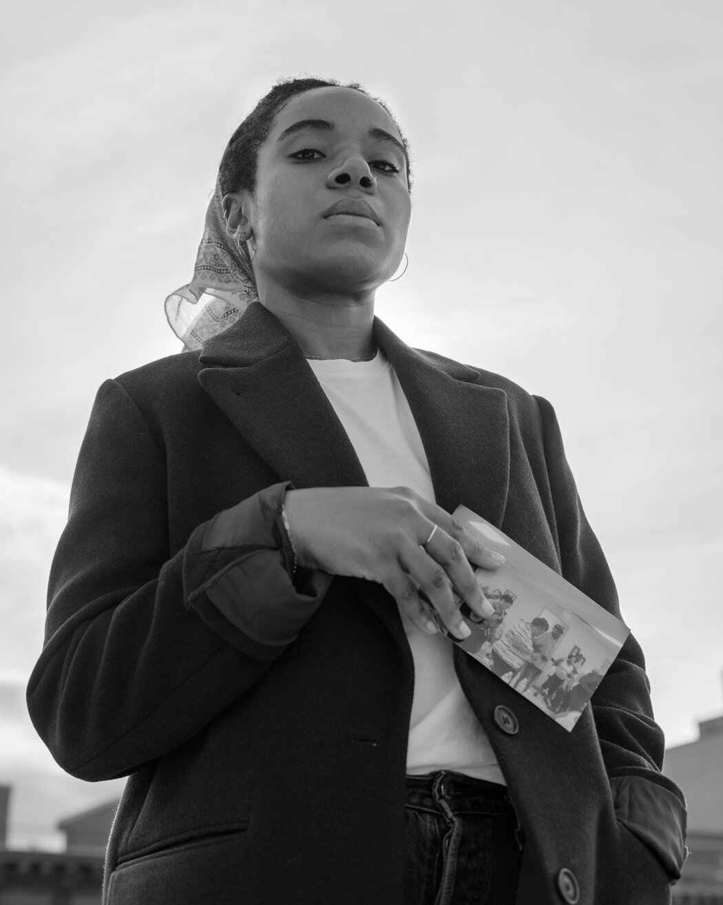
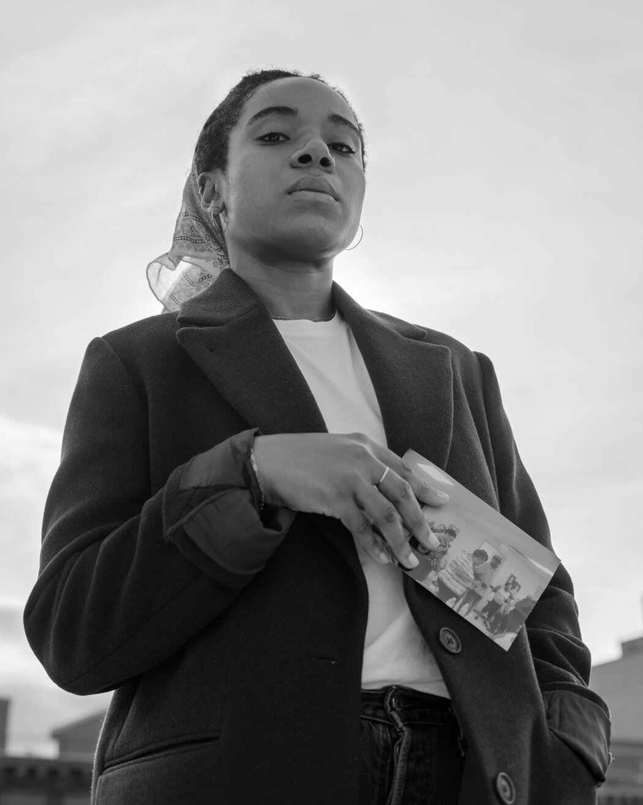
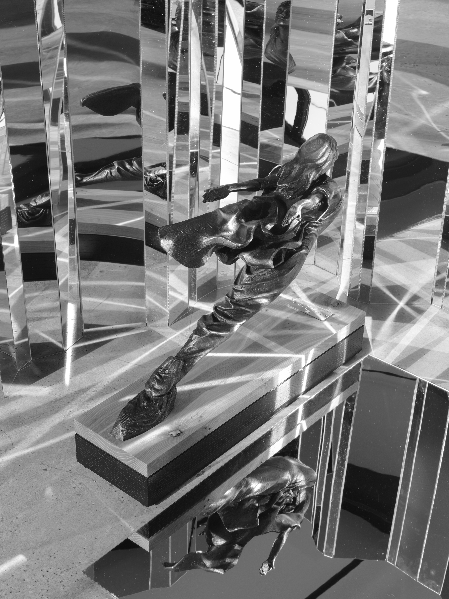
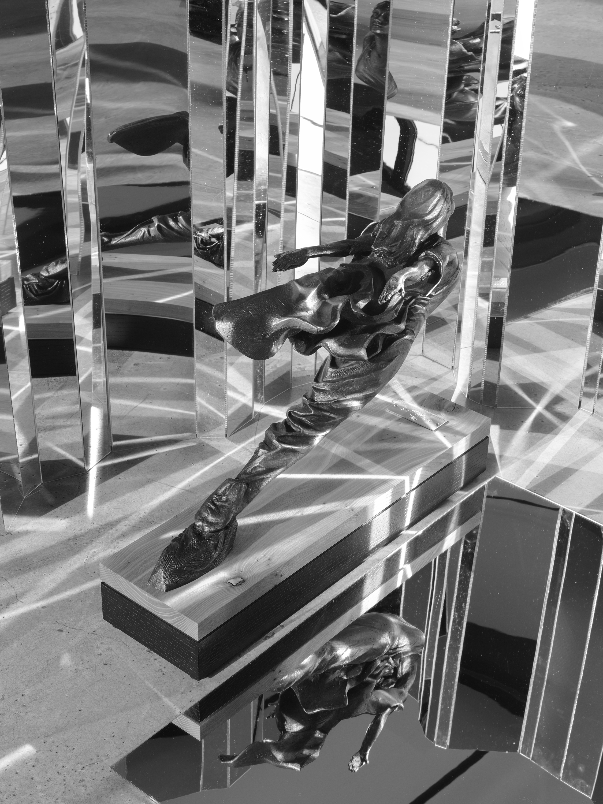

Dannielle Bowman is a visual artist working with photography. Bowman has been an artist in residence at Light Work, Baxter St at the Camera Club of New York, The Center for Photography at Woodstock, and PICTURE BERLIN. Bowman was awarded the 2020 Aperture Portfolio Prize, 2020 PHMuseum Women Photographers Grant, and the 2021 Gund Foundation Photography Portfolio Commission. Her work has been published in Aperture Magazine, Camera Austria International, and the British Journal of Photography. Bowman received a BFA from the Cooper Union and MFA from the Yale School of Art.
 

 
